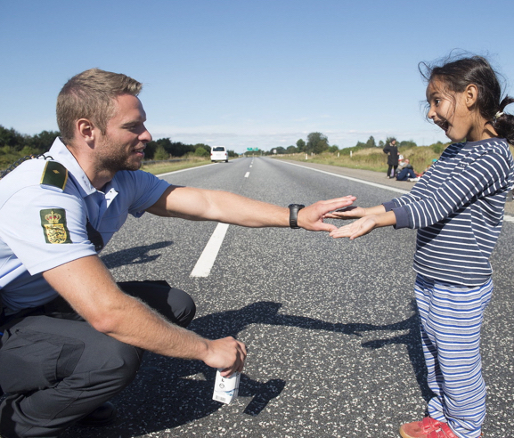
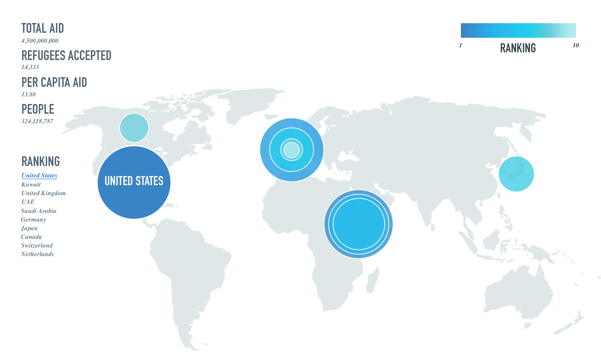
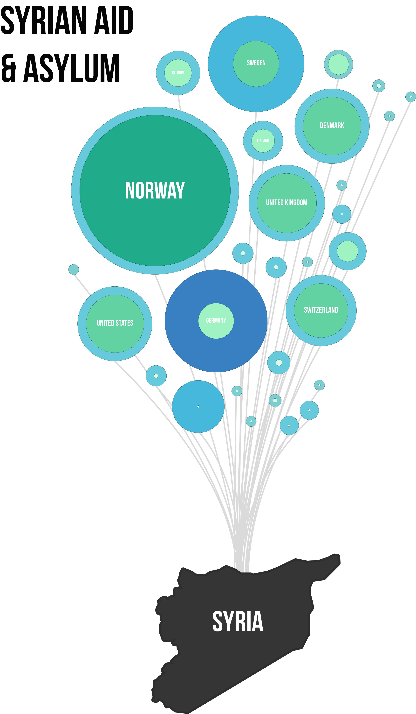
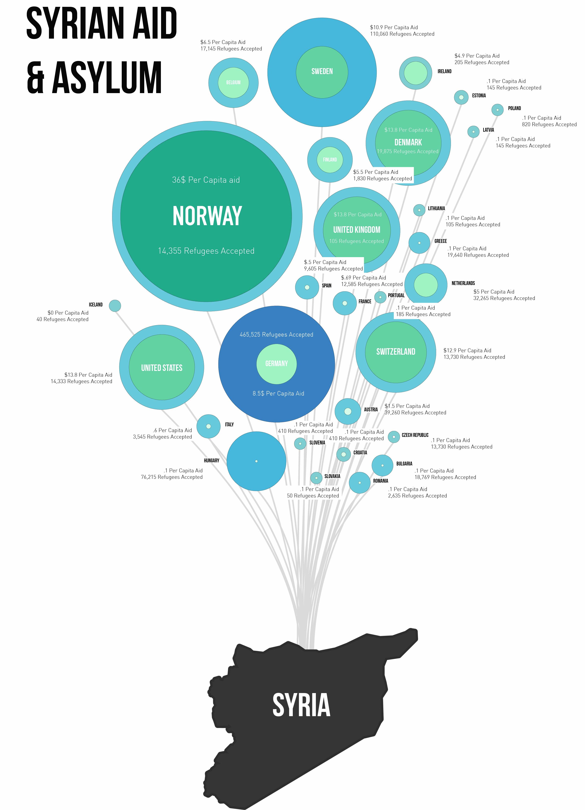

SYRIAN REFUGEE AID & ASYLUM

These diagrams examine the roles played by the European Union, both as a provider of humanitarian aid, and as a hosting region. While it is true that the EU is a leading contributor to the humanitarian aid to the region, the amount of money donated by other countries varies greatly. The EU has accepted the vast majority of Syrians who have requested asylum.



